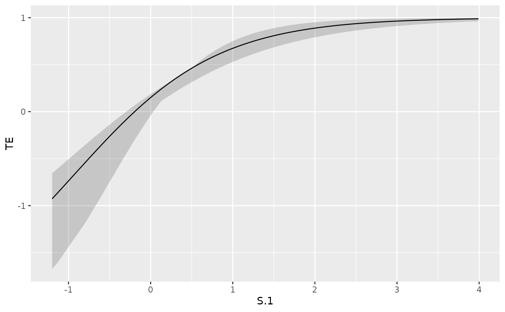

Introduction to Principal Surrogate Evaluation in R
Michael C Sachs and Erin E Gabriel
april 08, 2025
Source:vignettes/introduction.Rmd
introduction.RmdMethods
Introduction
A valid principal surrogate endpoint can be used as a primary endpoint for evaluating treatments in phase II clinical trials and for predicting individual treatment effects post licensure. A surrogate is considered to be valid if it provides reliable predictions of treatment effects on the clinical endpoint of interest. Frangakis and Rubin (2002) introduced the concept of principal stratification and the definition of a principal surrogate (PS). Informally, a post-treatment intermediate response variable is a principal surrogate if causal effects of the treatment on the clinical outcome only exist when causal effects of the treatment on the intermediate variable exist. The criteria for a PS have been modified and extended in more recent works, with most current literature focusing on wide effect modification as the primary criterion of interest; tests for wide effect modification are implemented in the package.
The goal of PS evaluation is estimation and testing of how treatment efficacy on the clinical outcome of interest varies over subgroups defined by possible treatment and surrogate combinations of interest; this is an effect modification objective. The combinations of interest are called the principal strata and they include a set of unobservable counterfactual responses: responses that would have occurred under a set of conditions counter to the observed conditions. To finesse this problem of unobservable responses, a variety of clever trial designs and estimation approaches have been proposed. Several of these have been implemented in the pseval package (Sachs and Gabriel 2016).
Notation
Let be the treatment indicator for subject , where 0 indicates the control or standard treatment, and 1 indicates the experimental treatment. We currently only allow for two levels of treatment and assume that the treatment assignments are randomized. Let be the observed value of the intermediate response for subject . Since can be affected by treatment, there are two naturally occurring counterfactual values of : under treatment, and under control. Let be the realization of the random variable , for . The outcome of interest is denoted . We consider the counterfactual values of and . We allow for binary, count, and time-to-event outcomes, thus may be a vector containing a time variable and an event/censoring indicator, i.e. where if is an event time, and if is a censoring time. For all of the methods, is only defined if the clinical outcome does not occur before the potential surrogate is measured at a fixed time after entry into the study. The data analyses only include participants who have not experienced the clinical outcome by time . For interpretability all of the methods assume no individual-level treatment effects on before , which we refer to as the “Equal early individual risk” assumption below.
Estimands
Criteria for to be a good surrogate are based on risk estimands that condition on the potential intermediate responses. The risk is defined as a mapping of the cumulative distribution function of conditional on the intermediate responses. The joint risk estimands conditions on the candidate surrogate under both level of treatment, .
$$ risk_1(s_1, s_0) = g\left\{F_{s_1}\left[Y(1) | S(0) = s_0, S(1) = s_1\right]\right\}, \\ risk_0(s_1, s_0) = g\left\{F_{s_1}\left[Y(0) | S(0) = s_0, S(1) = s_1\right]\right\}. $$
For instance, for a binary outcome, the risk function may simply be the probability , or for a time-to-event outcome the risk function may be the cumulative distribution function .
Currently we focus only on marginal risk estimands which condition only on , the intermediate response or biomarker under active treatment:
$$ risk_1(s_1) = g\left\{F_{s_1}\left[Y(1) | S(1) = s_1\right]\right\}, \\ risk_0(s_1) = g\left\{F_{s_1}\left[Y(0) | S(1) = s_1\right]\right\}. $$
Neither of the joint risk estimands are identifiable in a standard randomized trial, as either S(0) or S(1) or both will be missing for each subject. In the special case where is constant, such as the immune response to HIV antigens or Hep B in the placebo arm of a vaccine trial, the joint and marginal risk estimands are equivalent. This special case is referred to as case constant biomarker (CB) in much of the literature (Gilbert and Hudgens 2008); S_i(0) = c for subjects i. This may occur outside the vaccine setting when one considers the AUC of a treatment drug as a surrogate; those receiving placebo will have no drug and therefore all placebo AUC will be 0. Under assumptions given below, and in the case CB setting, the marginal risk estimand is identifiable in the treatment arm.
As well, as will be outlined below, there are specific trial augmentations that allow for the measurement or imputation of the missing counterfactual Ss. Under one of these augmentations, case CB can sometimes be induced by considering a function of the a candidate surrogate for evaluation. Greater detail on this point given below.
Specification of the distributions of determines the likelihood, we will denote this as . If were fully observed, simple maximum likelihood estimation could be used. The key challenge in estimating these risk estimands is solving the problem of conditioning on counterfactual values that are not observable for at least a subset of subjects in a randomized trial. This involves integrating out missing values based on some models and/or set of assumptions.
Principal Surrogate Criteria
Frangakis and Rubin (2002) gave a single criterion for a biomarker S to be a PS: causal effects of the treatment on the clinical outcome only exist when causal effects of the treatment on the intermediate variable exist. In general this can only be evaluated using the joint risk estimands, which consider not only the counterfactual values of the biomarker under treatment, but also under control . However, in the special case where all values are constant, say at level , such as an immune response to HIV in a HIV negative population pre-vaccination this criteria, often referred to as average causal necessity (ACN), can by written in terms of the marginal risk estimands as:
More recently, other works Gilbert and Hudgens (2008), Wolfson and Gilbert (2010), Ying Huang, Gilbert, and Wolfson (2013), Erin E. Gabriel and Gilbert (2014), and Erin E. Gabriel and Follmann (2015) have suggested that this criterion is both too restrictive and in some cases can be vacuously true. Instead most current works suggest that the wide effect modification (WEM) criterion is of primary importance, ACN being of secondary importance. WEM is given formally in terms of the risk estimands and a known contrast function satisfying if and only if by:
for at least some and , with the larger the the better. To evaluate WEM and ACN we need to identify the risk estimands.
Augmentation and Assumptions
We first make three standard assumptions used in much of the literature for absorbing events outcomes:
- Stable Unit Treatment Value Assumption (SUTVA): Observations on the independent units in the trial should be unaffected by the treatment assignment of other units.
- Ignorable Treatment Assignment: The observed treatment assignment does not change the counterfactual clinical outcome.
- Equal individual risk up to the time of candidate surrogate measurement .
In time-to-event settings one more assumption is needed:
- Non-informative censoring.
It should be noted that the equal individual risk assumption requires that time-to-event analysis start at time , rather than at randomization.
Wolfson and Gilbert (2010) outlines how these assumptions are needed for identification of the risk estimands. Now to deal with the missing values among those with , we next focus on three trial augmentations: Baseline immunogenicity predictor (BIP), closeout placebo vaccination (CPV), and baseline surrogate measurement (BSM). For further details on these augmentations, we refer you to Follmann (2006), Gilbert and Hudgens (2008), Erin E. Gabriel and Gilbert (2014), and Erin E. Gabriel and Follmann (2015).
BIP
Briefly, a BIP is any baseline measurement or set of measurements that is highly correlated with . It is particularly useful if is unlikely to be associated with the clinical outcome after conditioning on , i.e. ; some of the methods leverage this assumption. The BIP is used to integrate out the missing among those with based on a model for that is estimated among those with . We describe how this model is used in the next section.
The assumptions needed for a BIP to be useful depend on the risk model used. If the BIP is included in the risk model, only the assumption of no interaction with treatment and the candidate surrogate are needed. However, if the BIP is not included in the risk model, the assumption that that clinical outcome is independent of the BIP given the candidate surrogate is needed. Although not a requirement for identification of the risk estimands, it has been found in most simulations studies that a correlation between the BIP and of greater than 0.7 is needed for unbiased estimation in finite samples.
CPV
Under a CPV augmented design, control recipients that do not have events at the end of the follow-up period are given the experimental treatment. Then their intermediate response is measured at some time post treatment. This measurement is then used as a direct imputation for the missing . This augmentation was developed in the setting of vaccine trials, where the surrogate is an immune response and the outcome is infection. One set of conservative assumptions to use CPV as a direct imputation for are given in Wolfson and Gilbert (2010) are:
- Time constancy of the true intermediate response under active treatment, almost surely, for placebo recipients that are crossed over at the end of the trial, where is the measurement of the candidate surrogate after crossover treatment of the placebo subjects.
- No events (infections) during the close-out period
BSM
Erin E. Gabriel and Gilbert (2014) suggested the baseline augmentation BSM, which is a pre-treatment measurement of the candidate PS, denoted . The BSM may be a good predictor of without any further assumptions. It can be used in the same way as a BIP. Alternatively you can transform and use this as the candidate surrogate, further increasing the association with the BSM/BIP. Under the BSM assumption outlined in Erin E. Gabriel and Gilbert (2014);
- Time constancy of the true intermediate response under control,
then almost surely. You do not need this assumption to use a BSM, but if it holds then it induces the CB case, thus the joint and marginal risk estimands are equivalent.
Estimated Maximum Likelihood
Let denote the density of with parameters . Further let denote the indicator for missingness in . We proceed to estimate by maximizing
with respect to .
This procedure is called estimated maximum likelihood (EML) and was developed in Pepe and Fleming (1991). The key idea is that we are averaging the likelihood contributions for subjects missing with respect to the estimated distribution of . A BIP that is strongly associated with is needed for adequate performance.
Closed-form inference is not available for EML estimates, thus we recommend use of the bootstrap for estimation of standard errors. It was suggested as an approach to principal surrogate evaluation by Gilbert and Hudgens (2008) and Y. Huang and Gilbert (2011).
##Pseudoscore
Ying Huang, Gilbert, and Wolfson (2013) suggest a different estimation procedure that does have a closed form variance estimator. Instead of numerically optimizing the estimated likelihood, the pseudoscore approach iteratively finds the solution to weighted versions of the score equations. Pseudoscore estimates were also suggested in Wolfson (2009) and implemented for several special cases in Ying Huang, Gilbert, and Wolfson (2013). We have implemented here only one of the special cases: categorical and binary ( may be continuous or categorical). In addition to having closed form variance estimators, it has been argued that the pseudo-score estimators are more efficient than the EML estimators. The closed form variance estimates are not yet implemented.
Package features
Typically, users would have to code up the likelihood, integration models, and perform the optimization themselves. This is beyond the reach of many researchers who desire to use these methods. The goal of pseval is to correctly implement these methods with a flexible and user-friendly interface, enabling researchers to implement and interpret a wide variety of models.
The pseval package allows users to specify the type of augmented design that is used in their study, specify the form of the risk model along with the distribution of , and specify different integration models to estimate the distribution of . Then the likelihood can be maximized and bootstraps run. Post-estimation summaries are available to display and analyze the treatment efficacy as a function of . All of this is implemented with a flexible and familiar interface.
Package information
Installation
pseval is an R package aimed at implementing
existing methods for surrogate evaluation using a flexible and common
interface. Development will take place on the Github page, and the
current version of the package can be installed as shown below. First
you must install the devtools package, if you haven’t
already install.packages("devtools").
devtools::install_github("sachsmc/pseval")or it can be installed from CRAN:
install.packages("pseval")Usage
Here we will walk through some basic analyses from the point of view of a new R user. Along the way we will highlight the main features of pseval. pseval supports both binary outcomes and time-to-event, thus we will also need to load the survival package.
First let’s create an example dataset. The package provides the
function generate_example_data which takes a single
argument: the sample size.
set.seed(1492)
fakedata <- generate_example_data(n = 800)
head(fakedata)| Z | BIP | CPV | BSM | S.obs | time.obs | event.obs | Y.obs | S.obs.cat | BIP.cat |
|---|---|---|---|---|---|---|---|---|---|
| 0 | 0.3353179 | 1.4851399 | 0.4596161 | 0.3526810 | 0.3301972 | 0 | 0 | (-0.198,0.503] | (0.0574,0.766] |
| 0 | 1.4536863 | 2.6379400 | 1.3959104 | 1.4668891 | 0.1195136 | 1 | 0 | (1.36, Inf] | (0.766, Inf] |
| 0 | -0.7243934 | NA | -0.6272350 | -0.7319076 | 0.2631222 | 1 | 1 | (-Inf,-0.198] | (-Inf,-0.678] |
| 0 | -0.1183592 | 0.9421504 | 0.0773831 | -0.0183341 | 0.1373458 | 1 | 0 | (-0.198,0.503] | (-0.678,0.0574] |
| 0 | -0.2352566 | NA | -0.1497145 | -0.1847024 | 0.8543703 | 1 | 1 | (-0.198,0.503] | (-0.678,0.0574] |
| 0 | -0.7782851 | 0.1159434 | -0.6572161 | -0.6631371 | 0.2200481 | 1 | 0 | (-Inf,-0.198] | (-Inf,-0.678] |
The example data includes both a time-to-event outcome, a binary outcome, a surrogate, a BIP, CPV, and BSM, and a categorical version of the surrogate. The true model for the time is exponential, with parameters (intercept) = -1, S(1) = 0.0, Z = 0.0, S(1):Z = -0.75. The true model for binary is logistic, with the same parameter values.
In the above table S.obs.cat and BIP.cat are formed as
S.obs.cat <- factor(S.obs,levels=c(-Inf, quantile(c(S.0, S.1), c(.25, .5, .75), na.rm = TRUE), Inf))
and similarly for BIP.cat. Alternatively a user could input arbitrary
numeric values to represent different discrete subgroups (e.g., 0s and
1s to denote 2 subgroups).
The "psdesign" object
We begin by creating a "psdesign" object with the
synonymous function. This is the object that combines the raw dataset
with information about the study design and the structure of the data.
Subsequent analysis will operate on this psdesign object. It is designed
to be analogous to the svydesign function in the
survey package (https://CRAN.R-project.org/package=survey). The first
argument is the data frame where the data are stored. All subsequent
arguments describe the mappings from the variable names in the data
frame to important variables in the PS analysis, using the same notation
as above. An optional weights argument describes the sampling weights,
if present. Our first analysis will use the binary version of the
outcome, with continuous
and the BIP labeled
.
The object has a print method, so we can inspect the result.
binary.ps <- psdesign(data = fakedata, Z = Z, Y = Y.obs, S = S.obs, BIP = BIP)
binary.ps## Augmented data frame: 800 obs. by 6 variables.
## Z Y S.1 S.0 cdfweights BIP
## 1 0 0 NA 0.3527 1 0.335
## 2 0 0 NA 1.4669 1 1.454
## 3 0 1 NA -0.7319 1 -0.724
## 4 0 0 NA -0.0183 1 -0.118
## 5 0 1 NA -0.1847 1 -0.235
## 6 0 0 NA -0.6631 1 -0.778
##
## Empirical TE: 0.526
##
## Mapped variables:
## Z -> Z
## Y -> Y.obs
## S -> S.obs
## BIP -> BIP
##
## Integration models:
## None present, see ?add_integration for information on integration models.
##
## Risk models:
## None present, see ?add_riskmodel for information on risk models.
## No estimates present, see ?ps_estimate.
## No bootstraps present, see ?ps_bootstrap.The printout displays a brief description of the data, including the
empirical treatment efficacy estimate, the variables used in the
analysis and their corresponding variables in the original dataset.
Finally the printout invites the user to see the help page for
add_integration, in order to add an integration model to
the psdesign object, the next step in the analysis.
Missing values in the variable are allowed. Note that any cases where is missing will be integrated over in the likelihood or score equations. Thus any cases that experienced an event prior to the time when the surrogate was measured should be excluded from the dataset. The equal individual risk assumption allows us to make causal inferences even after excluding such cases.
psdesign easily accommodates case-control or case-cohort
sampling. In this case, the surrogate
is only measured on a subset of the data, inducing missingness in
by design. Let’s modify the fake dataset to see how it works. We’re
going to sample all of the cases, and 20% of the controls for
measurement of
.
fakedata.cc <- fakedata
missdex <- sample((1:nrow(fakedata.cc))[fakedata.cc$Y.obs == 0],
size = floor(sum(fakedata.cc$Y.obs == 0) * .8))
fakedata.cc[missdex, ]$S.obs <- NA
fakedata.cc$weights <- ifelse(fakedata.cc$Y.obs == 1, 1, .2)Now we can create the "psdesign" object, using the
entire dataset (including those missing S.obs) and passing
the weights to the weights field.
binary.cc <- psdesign(data = fakedata.cc, Z = Z, Y = Y.obs, S = S.obs,
BIP = BIP, weights = weights)The other augmentation types can be defined by mapping variables to
the names BIP, CPV, and/or BSM.
The augmentations are handled as described in the previous section: CPV
is used as a direct imputation for
,
and BSM is used as a direct imputation for
.
BIPs and BSMs are made available in the augmented dataset for use in the
integration models which we describe in the next subsection.
For survival outcomes, a key assumption is that the potential
surrogate is measured at a fixed time
after entry into the study. Any subjects who have a clinical outcome
prior to
will be removed from the analysis, with a warning. If tau
is not specified in the psdesign object, then it is assumed
to be 0. Survival outcomes are specified by mapping Y to a
Surv object, which requires the survival
package:
surv.ps <- psdesign(data = fakedata, Z = Z, Y = Surv(time.obs, event.obs), S = S.obs,
BIP = BIP, CPV = CPV, BSM = BSM)## Warning in psdesign(data = fakedata, Z = Z, Y = Surv(time.obs, event.obs), :
## tau missing in psdesign: assuming that the surrogate S was measured at time 0.Integration models
The EML procedure requires an estimate of
,
and we refer to this as the integration model. Details are available in
the help page for add_integration, shown below. Several
integration models are implemented, including a parametric model that
uses a formula interface to define a regression model, a semiparametric
model that specifies a location and a scale model is robust to the
specification of the distribution, and a non-parametric model that uses
empirical conditional probability estimates for discrete
and
.
?add_integration| add_integration | R Documentation |
Integration models
Description
Add integration model to a psdesign object
Usage
add_integration(psdesign, integration)Arguments
psdesign |
A psdesign object |
integration |
An integration object |
Details
This is a list of the available integration models. The fundamental problem in surrogate evaluation is that there are unobserved values of the counterfactual surrogate responses S(1). In the estimated maximum likelihood framework, for subjects missing the S(1) values, we use an auxiliary pre-treatment variable or set of variables W that is observed for every subject to estimate the distribution of S(1) | W. Typically, this W is a BIP. Then for each missing S(1), we integrate likelihood contributions over each non-missing S(1) given their value of W, and average over the contributions.
-
integrate_parametric This is a parametric integration model that fits a linear model for the mean of S(1) | W and assumes a Gaussian distribution.
-
integrate_bivnorm This is another parametric integration model that assumes that S(1) and W are jointly normally distributed. The user must specify their mean, variances and correlation.
-
integrate_nonparametric This is a non-parametric integration model that is only valid for categorical S(1) and W. It uses the observed proportions to estimate the joint distribution of S(1), W.
-
integrate_semiparametric This is a semi-parametric model that uses the semi-parametric location scale model of Heagerty and Pepe (1999). Models are specified for the location of S(1) | W and the scale of S(1) | W. Then integrations are drawn from the empirical distribution of the residuals from that model, which are then transformed to the appropriate location and scale.
Examples
test <- psdesign(generate_example_data(n = 100), Z = Z, Y = Y.obs, S = S.obs, BIP = BIP)
add_integration(test, integrate_parametric(S.1 ~ BIP))
test + integrate_parametric(S.1 ~ BIP) # same as above
For this first example, let’s use the parametric integration model. We specify the mean model for as a formula. The predictor is generally a function of the BIP and the BSM, if available. We can add the integration model directly to the psdesign object and inspect the results. Note that in the formula, we refer to the variable names in the augmented dataset.
binary.ps <- binary.ps + integrate_parametric(S.1 ~ BIP)
binary.ps## Augmented data frame: 800 obs. by 6 variables.
## Z Y S.1 S.0 cdfweights BIP
## 1 0 0 NA 0.3527 1 0.335
## 2 0 0 NA 1.4669 1 1.454
## 3 0 1 NA -0.7319 1 -0.724
## 4 0 0 NA -0.0183 1 -0.118
## 5 0 1 NA -0.1847 1 -0.235
## 6 0 0 NA -0.6631 1 -0.778
##
## Empirical TE: 0.526
##
## Mapped variables:
## Z -> Z
## Y -> Y.obs
## S -> S.obs
## BIP -> BIP
##
## Integration models:
## integration model for S.1 :
## integrate_parametric(formula = S.1 ~ BIP )
##
## Risk models:
## None present, see ?add_riskmodel for information on risk models.
## No estimates present, see ?ps_estimate.
## No bootstraps present, see ?ps_bootstrap.We can add multiple integration models to a psdesign object, say we want a model for :
binary.ps + integrate_parametric(S.0 ~ BIP)## Augmented data frame: 800 obs. by 6 variables.
## Z Y S.1 S.0 cdfweights BIP
## 1 0 0 NA 0.3527 1 0.335
## 2 0 0 NA 1.4669 1 1.454
## 3 0 1 NA -0.7319 1 -0.724
## 4 0 0 NA -0.0183 1 -0.118
## 5 0 1 NA -0.1847 1 -0.235
## 6 0 0 NA -0.6631 1 -0.778
##
## Empirical TE: 0.526
##
## Mapped variables:
## Z -> Z
## Y -> Y.obs
## S -> S.obs
## BIP -> BIP
##
## Integration models:
## integration model for S.1 :
## integrate_parametric(formula = S.1 ~ BIP )
## integration model for S.0 :
## integrate_parametric(formula = S.0 ~ BIP )
##
## Risk models:
## None present, see ?add_riskmodel for information on risk models.
## No estimates present, see ?ps_estimate.
## No bootstraps present, see ?ps_bootstrap.In a future version of the package, we will allow for estimation of the joint risk estimands that depend on both and . We can also use splines, other transformations, and other variables in the formula:
library(splines)
binary.ps + integrate_parametric(S.1 ~ BIP^2)
binary.ps + integrate_parametric(S.1 ~ bs(BIP, df = 3))
binary.ps + integrate_parametric(S.1 ~ BIP + BSM + BSM^2)These are shown as examples, we will proceed with the simple linear
model for integration. The other integration models are called
integrate_bivnorm, integrate_nonparametric,
and integrate_semiparametric. See their help files for
details on the models and their specification.
The next step is to define the risk model. We will proceed with the simple parametric integration model.
Risk models and likelihoods
The risk model is the specification of the distribution for the
outcome
given
and
.
We accommodate a variety of flexible specifications for this model, for
binary, time-to-event, and count outcomes. We have implemented
exponential and weibull survival models, and a flexible specification
for binary models, allowing for standard or custom link functions. See
the help file for add_riskmodel for more details.
?add_riskmodel| add_riskmodel | R Documentation |
Add risk model to a psdesign object
Description
Add risk model to a psdesign object
Usage
add_riskmodel(psdesign, riskmodel)Arguments
psdesign |
A psdesign object |
riskmodel |
A risk model object, from the list above |
Details
The risk model component specifies the likelihood for the data. This involves specifying the distribution of the outcome variable, whether it is binary or time-to-event, and specifying how the surrogate S(1) and the treatment Z interact and affect the outcome. We use the formula notation to be consistent with other regression type models in R. Below is a list of available risk models.
-
risk_binary This is a generic risk model for binary outcomes. The user can specify the formula, and link function using either risk.logit for the logistic link, or risk.probit for the probit link. Custom link functions may also be specified, which take a single numeric vector argument, and returns a vector of corresponding probabilities.
-
risk_weibull This is a parameterization of the Weibull model for time-to-event outcomes that is consistent with that of rweibull. The user specifies the formula for the linear predictor of the scale parameter.
-
risk_exponential This is a simple exponential model for a time-to-event outcome.
-
risk_poisson This is a Poisson model for count outcomes. It allows for offsets in the formula.
-
risk_continuous This is a Gaussian model for continuous outcomes. It assumes that larger values of the outcome are harmful (e.g. blood pressure)
Examples
test <- psdesign(generate_example_data(n = 100), Z = Z, Y = Y.obs, S = S.obs, BIP = BIP) +
integrate_parametric(S.1 ~ BIP)
add_riskmodel(test, risk_binary())
test + risk_binary() # same as aboveLet’s add a simple binary risk model using the logit link. The
argument D specifies the number of samples to use for the
simulated annealing, also known as empirical integration, in the EML
procedure. In general, D should be set to something reasonably large,
like 2 or 3 times the sample size.
binary.ps <- binary.ps + risk_binary(model = Y ~ S.1 * Z, D = 5, risk = risk.logit)
binary.ps## Augmented data frame: 800 obs. by 6 variables.
## Z Y S.1 S.0 cdfweights BIP
## 1 0 0 NA 0.3527 1 0.335
## 2 0 0 NA 1.4669 1 1.454
## 3 0 1 NA -0.7319 1 -0.724
## 4 0 0 NA -0.0183 1 -0.118
## 5 0 1 NA -0.1847 1 -0.235
## 6 0 0 NA -0.6631 1 -0.778
##
## Empirical TE: 0.526
##
## Mapped variables:
## Z -> Z
## Y -> Y.obs
## S -> S.obs
## BIP -> BIP
##
## Integration models:
## integration model for S.1 :
## integrate_parametric(formula = S.1 ~ BIP )
##
## Risk models:
## risk_binary(model = Y ~ S.1 * Z, D = 5, risk = risk.logit )
##
## No estimates present, see ?ps_estimate.
## No bootstraps present, see ?ps_bootstrap.Estimation and Bootstrap
We estimate the parameters and bootstrap using the same type of
syntax. We can add a "ps_estimate" object, which takes
optional arguments start for starting values, and other
arguments that are passed to the optim function. The
method argument determines the optimization method, we have
found that “BFGS” works well in these types of problems and it is the
default. Use "pseudo-score" as the method
argument for pseudo-score estimation for binary risk models with
categorical BIPs.
The ps_bootstrap function takes the additional arguments
n.boots for the number of bootstrap replicates, and
progress.bar which is a logical that displays a progress
bar in the R console if true. It is helpful to pass the estimates as
starting values in the bootstrap resampling. With estimates and
bootstrap replicates present, printing the psdesign object displays
additional information. In real examples you should use more than 10
bootstrap replicates.
binary.est <- binary.ps + ps_estimate(method = "BFGS")
binary.boot <- binary.est + ps_bootstrap(n.boots = 10, progress.bar = FALSE,
start = binary.est$estimates$par, method = "BFGS")
binary.boot## Augmented data frame: 800 obs. by 6 variables.
## Z Y S.1 S.0 cdfweights BIP
## 1 0 0 NA 0.3527 1 0.335
## 2 0 0 NA 1.4669 1 1.454
## 3 0 1 NA -0.7319 1 -0.724
## 4 0 0 NA -0.0183 1 -0.118
## 5 0 1 NA -0.1847 1 -0.235
## 6 0 0 NA -0.6631 1 -0.778
##
## Empirical TE: 0.526
##
## Mapped variables:
## Z -> Z
## Y -> Y.obs
## S -> S.obs
## BIP -> BIP
##
## Integration models:
## integration model for S.1 :
## integrate_parametric(formula = S.1 ~ BIP )
##
## Risk models:
## risk_binary(model = Y ~ S.1 * Z, D = 5, risk = risk.logit )
##
## Estimated parameters:
## (Intercept) S.1 Z S.1:Z
## -0.919 -0.028 -0.221 -1.133
## Convergence: TRUE
##
## Bootstrap replicates:
## Estimate boot.se lower.CL.2.5. upper.CL.97.5. p.value
## (Intercept) -0.919 0.131 -1.286 -0.884 2.69e-12
## S.1 -0.028 0.142 -0.130 0.306 8.44e-01
## Z -0.221 0.152 -0.269 0.195 1.46e-01
## S.1:Z -1.133 0.272 -1.668 -0.870 3.12e-05
##
## Out of 10 bootstraps, 10 converged ( 100 %)
##
## Test for wide effect modification on 1 degree of freedom. 2-sided p value < .0001Do it all at once
The next code chunk shows how the model can be defined and estimated all at once.
binary.est <- psdesign(data = fakedata, Z = Z, Y = Y.obs, S = S.obs, BIP = BIP) +
integrate_parametric(S.1 ~ BIP) +
risk_binary(model = Y ~ S.1 * Z, D = 50, risk = risk.logit) +
ps_estimate(method = "BFGS")Plots and summaries
We provide summary and plotting methods for the psdesign object. If bootstrap replicates are present, the summary method does a test for wide effect modification. Under the parametric risk models implemented in this package, the test for wide effect modification is equivalent to a test that the coefficient is different from 0. This is implemented using a Wald test using the bootstrap estimate of the variance.
Another way to assess wide effect modification is to compute the
standardized total gain (STG) (Erin E. Gabriel,
Sachs, and Gilbert 2015). This is implemented in the
calc_STG function. The standardized total gain can be
interpreted as the area sandwiched between the risk difference curve and
the horizontal line at the marginal risk difference. It is a measure of
the spread of the distribution of the risk difference, and is a less
parametric way to test for wide effect modification. The
calc_STG function computes the STG at the estimated
parameters, at the bootstrap samples, if present. The function prints
the results and invisibly returns a list containing the observed STG,
and the bootstrapped STGS.
calc_STG(binary.boot, progress.bar = FALSE)The summary method also computes the marginal treatment efficacy marginalized over and compares it to the average treatment efficacy conditional on . This is an assessment of model fit. A warning will be given if the two estimates are dramatically different. These estimates are presented in the summary along with the empirical marginal treatment efficacy.
smary <- summary(binary.boot)## Augmented data frame: 800 obs. by 6 variables.
## Z Y S.1 S.0 cdfweights BIP
## 1 0 0 NA 0.3527 1 0.335
## 2 0 0 NA 1.4669 1 1.454
## 3 0 1 NA -0.7319 1 -0.724
## 4 0 0 NA -0.0183 1 -0.118
## 5 0 1 NA -0.1847 1 -0.235
## 6 0 0 NA -0.6631 1 -0.778
##
## Empirical TE: 0.526
##
## Mapped variables:
## Z -> Z
## Y -> Y.obs
## S -> S.obs
## BIP -> BIP
##
## Integration models:
## integration model for S.1 :
## integrate_parametric(formula = S.1 ~ BIP )
##
## Risk models:
## risk_binary(model = Y ~ S.1 * Z, D = 5, risk = risk.logit )
##
## Estimated parameters:
## (Intercept) S.1 Z S.1:Z
## -0.919 -0.028 -0.221 -1.133
## Convergence: TRUE
##
## Bootstrap replicates:
## Estimate boot.se lower.CL.2.5. upper.CL.97.5. p.value
## (Intercept) -0.919 0.131 -1.286 -0.884 2.69e-12
## S.1 -0.028 0.142 -0.130 0.306 8.44e-01
## Z -0.221 0.152 -0.269 0.195 1.46e-01
## S.1:Z -1.133 0.272 -1.668 -0.870 3.12e-05
##
## Out of 10 bootstraps, 10 converged ( 100 %)
##
## Test for wide effect modification on 1 degree of freedom. 2-sided p value < .0001
##
## Treatment Efficacy:
## empirical marginal model
## 0.526 0.526 0.534
## Model-based average TE is 1.6 % different from the empirical and 1.6 % different from the marginal.The calc_risk function computes the risk in each
treatment arm, and contrasts of the risks. By default it computes the
treatment efficacy, but there are other contrast functions available.
The contrast function is a function that takes 2 inputs, the
and
,
and returns some one dimensional function of those two inputs. It must
be vectorized. Some built-in functions are “TE” for treatment efficacy
,
“RR” for relative risk
,
“logRR” for log of the relative risk, and “RD” for the risk difference
.
You can pass the name of the function, or the function itself to
calc_risk. See ?calc_risk for more information
about contrast functions.
Other arguments of the calc_risk function include
t, the time at which to calculate the risk for
time-to-event outcomes, n.samps which is the number of
samples over the range of S.1 at which the risk will be calculated, and
CI.type, which can be set to "pointwise" for
pointwise confidence intervals or "band" for a simultaneous
confidence band. sig.level is the significance level for
the bootstrap confidence intervals. If the outcome is time-to-event and
is not present, then it will use the restricted mean survival time.
| S.1 | Y | R0 | R1 | Y.boot.se | Y.upper.CL.0.95 | Y.lower.CL.0.95 | R0.boot.se | R0.upper.CL.0.95 | R0.lower.CL.0.95 | R1.boot.se | R1.upper.CL.0.95 | R1.lower.CL.0.95 | |
|---|---|---|---|---|---|---|---|---|---|---|---|---|---|
| V1 | -0.8567331 | -0.5987036 | 0.2900268 | 0.4636670 | 0.4790395 | -0.3980377 | -1.2642732 | 0.0424780 | 0.3022725 | 0.2185511 | 0.0680346 | 0.4997864 | 0.4078591 |
| V2 | -0.3768993 | -0.1531511 | 0.2872703 | 0.3312661 | 0.2398953 | -0.0526225 | -0.5642967 | 0.0323329 | 0.2976192 | 0.2288122 | 0.0405746 | 0.3598227 | 0.2986408 |
| V3 | -0.3768993 | -0.1531511 | 0.2872703 | 0.3312661 | 0.2398953 | -0.0526225 | -0.5642967 | 0.0323329 | 0.2976192 | 0.2288122 | 0.0405746 | 0.3598227 | 0.2986408 |
| S.1 | Y | R0 | R1 | Y.boot.se | Y.upper.CL.0.95 | Y.lower.CL.0.95 | R0.boot.se | R0.upper.CL.0.95 | R0.lower.CL.0.95 | R1.boot.se | R1.upper.CL.0.95 | R1.lower.CL.0.95 | |
|---|---|---|---|---|---|---|---|---|---|---|---|---|---|
| V1 | -0.2907799 | -0.0792698 | 0.2867772 | 0.3095100 | 0.2058057 | 0.0050699 | -0.4378068 | 0.0305413 | 0.2967884 | 0.2306893 | 0.0353754 | 0.3382743 | 0.2808802 |
| V2 | -0.0136424 | 0.1400180 | 0.2851939 | 0.2452617 | 0.1164425 | 0.1784430 | -0.0585296 | 0.0249749 | 0.2941240 | 0.2368027 | 0.0206818 | 0.2736347 | 0.2272614 |
| V3 | 0.0660364 | 0.1973375 | 0.2847397 | 0.2285499 | 0.0969680 | 0.2245060 | 0.0394667 | 0.0234684 | 0.2933606 | 0.2385809 | 0.0174160 | 0.2565410 | 0.2119097 |
It is easy to plot the risk estimates. By default, the plot method
displays the TE contrast, but this can be changed using the same syntax
as in calc_risk.
plot(binary.boot, contrast = "TE", lwd = 2)
abline(h = smary$TE.estimates[2], lty = 3)
expit <- function(x) exp(x)/(1 + exp(x))
trueTE <- function(s){
r0 <- expit(-1 - 0 * s)
r1 <- expit(-1 - .75 * s)
1 - r1/r0
}
rug(binary.boot$augdata$S.1)## Warning in rug(binary.boot$augdata$S.1): some values will be clipped
curve(trueTE(x), add = TRUE, col = "red")
legend("bottomright", legend = c("estimated TE", "95\\% CB", "marginal TE", "true TE"),
col = c("black", "black", "black", "red"), lty = c(1, 2, 3, 1), lwd = c(2, 2, 1, 1))Plot showing the estimates using the example data, along with confidence bands (CB), and the true treatment efficacy (TE) curve.
By default, plots of psdesign objects with bootstrap samples will display simultaneous confidence bands for the curve. These bands satisfy
for confidence level
.
The alternative is to use pointwise confidence intervals, with the
option CI.type = "pointwise". These intervals satisfy
Different summary measures are available for plotting. The options
are “TE” for treatment efficacy =
,
“RR” for relative risk =
,
“logRR” for log of the relative risk, “risk” for the risk in each
treatment arm, and “RD” for the risk difference =
.
We can also transform using the log option of
plot.
plot(binary.boot, contrast = "logRR", lwd = 2, col = c("black", "grey75", "grey75"))
plot(binary.boot, contrast = "RR", log = "y", lwd = 2, col = c("black", "grey75", "grey75"))
plot(binary.boot, contrast = "RD", lwd = 2, col = c("black", "grey75", "grey75"))
plot(binary.boot, contrast = "risk", lwd = 2, lty = c(1, 0, 0, 2, 0, 0))
legend("topright", legend = c("R0", "R1"), lty = c(1, 2), lwd = 2)Plot illustrating ways that different risk contrast functions can be plotted.
The calc_risk function is the workhorse that creates the
plots. You can call this function directly to obtain estimates, standard
errors, and confidence intervals for the estimated risk in each
treatment arm and transformations of the risk like TE. The parameter
n.samps determines the number of points at which to
calculate the risk. The points are evenly spaced over the range of S.1.
Use this function to compute other summaries, make plots using
ggplot2 or lattice and more.
| S.1 | Y | R0 | R1 | Y.boot.se | Y.lower.CL.2.5 | Y.upper.CL.97.5 | R0.boot.se | R0.lower.CL.2.5 | R0.upper.CL.97.5 | R1.boot.se | R1.lower.CL.2.5 | R1.upper.CL.97.5 | |
|---|---|---|---|---|---|---|---|---|---|---|---|---|---|
| V1 | -2.275699 | -1.741665 | 0.2982692 | 0.8177541 | 1.647418 | -6.113559 | -1.341239 | 0.0714416 | 0.1249966 | 0.3230252 | 0.0648381 | 0.7425365 | 0.9315855 |
| V2 | -2.275699 | -1.741665 | 0.2982692 | 0.8177541 | 1.647418 | -6.113559 | -1.341239 | 0.0714416 | 0.1249966 | 0.3230252 | 0.0648381 | 0.7425365 | 0.9315855 |
| V3 | -2.275699 | -1.741665 | 0.2982692 | 0.8177541 | 1.647418 | -6.113559 | -1.341239 | 0.0714416 | 0.1249966 | 0.3230252 | 0.0648381 | 0.7425365 | 0.9315855 |
Summary and Conclusion
We have implemented the core methods for principal surrogate evaluation in our pseval package. Our aim was to create a flexible and consistent user interface that allows for the estimation of a wide variety of statistical models in this framework. There has been some other work in this area. The Surrogate package implements the core methods for the evaluation of trial-level surrogates using a meta-analytic framework. It also has a wide variety of models, each implemented in a different function each with a long list of parameters (Elst et al. 2016).
Our package uses the + sign to combine function calls
into a single object. This is called “overloading the +
operator” and is most famously known from the ggplot2
package (Wickham 2009). Conceptually, this
was appealing to us because it allows users to build up analysis objects
starting from the design, and ending with the estimation. The distinct
analysis concepts of the design, risk model specification, integration
model, and estimation/bootstrap approaches are separated into distinct
function calls, each with a limited number of parameters. This makes it
easier for users to keep track of their models, makes it easier to
understand the methods involved, and allows for the specification of a
wide variety of models by mixing and matching the function calls. This
framework will also make it easier to maintain the codebase, and to
extend it in the future as the methods evolve. Our package is useful for
novice and expert R users alike, and implements an important set of
statistical methods for the first time.
Appendix
Additional examples
Plot both types of CI
plot(binary.boot, contrast = "TE", lwd = 2, CI.type = "band")
sbs <- calc_risk(binary.boot, CI.type = "pointwise", n.samps = 200)
lines(Y.lower.CL.2.5 ~ S.1, data = sbs, lty = 3, lwd = 2)
lines(Y.upper.CL.97.5 ~ S.1, data = sbs, lty = 3, lwd = 2)
legend("bottomright", lwd = 2, lty = 1:3,
legend = c("estimate", "simultaneous CI", "pointwise CI"))Plot with ggplot2
library(ggplot2)
TE.est <- calc_risk(binary.boot, n.samps = 200)
ggplot(TE.est,
aes(x = S.1, y = Y, ymin = Y.lower.CL.0.95, ymax = Y.upper.CL.0.95)) +
geom_line() + geom_ribbon(alpha = .2) + ylab(attr(TE.est, "Y.function"))
Case-control design
cc.fit <- binary.cc + integrate_parametric(S.1 ~ BIP) +
risk_binary(D = 10) + ps_estimate()
cc.fitSurvival outcome
surv.fit <- psdesign(fakedata, Z = Z, Y = Surv(time.obs, event.obs),
S = S.obs, BIP = BIP, CPV = CPV) +
integrate_semiparametric(formula.location = S.1 ~ BIP, formula.scale = S.1 ~ 1) +
risk_exponential(D = 10) + ps_estimate(method = "BFGS") + ps_bootstrap(n.boots = 20)
surv.fit
plot(surv.fit)Continuous outcome
fakedata$Y.cont <- log(fakedata$time.obs + 0.01)
cont.fit <- psdesign(fakedata, Z = Z, Y = Y.cont,
S = S.obs, BIP = BIP, CPV = CPV) +
integrate_semiparametric(formula.location = S.1 ~ BIP, formula.scale = S.1 ~ 1) +
risk_continuous(D = 10) + ps_estimate(method = "BFGS") #+ ps_bootstrap(n.boots = 20)
cont.fit## Augmented data frame: 800 obs. by 7 variables.
## Z Y S.1 S.0 cdfweights BIP CPV
## 1 0 -1.078 NA 0.3527 1 0.335 1.485
## 2 0 -2.044 NA 1.4669 1 1.454 2.638
## 3 0 -1.298 NA -0.7319 1 -0.724 NA
## 4 0 -1.915 NA -0.0183 1 -0.118 0.942
## 5 0 -0.146 NA -0.1847 1 -0.235 NA
## 6 0 -1.469 NA -0.6631 1 -0.778 0.116
##
## Empirical TE: -0.688
##
## Mapped variables:
## Z -> Z
## Y -> Y.cont
## S -> S.obs
## BIP -> BIP
## CPV -> CPV
##
## Integration models:
## integration model for S.1 :
## integrate_semiparametric(formula.location = S.1 ~ BIP, formula.scale = S.1 ~ 1 )
##
## Risk models:
## risk_continuous(D = 10 )
##
## Estimated parameters:
## sigma (Intercept) S.1 Z S.1:Z
## 0.0430 -1.4164 -0.0536 -0.0957 -0.8851
## Convergence: TRUE
##
## No bootstraps present, see ?ps_bootstrap.
plot(cont.fit, contrast = "risk")Categorical S
S.obs.cat and BIP.cat are factors:
| S.obs.cat/BIP.cat | (-Inf,-0.678] | (-0.678,0.0574] | (0.0574,0.766] | (0.766, Inf] |
|---|---|---|---|---|
| (-Inf,-0.198] | 135 | 65 | 0 | 0 |
| (-0.198,0.503] | 64 | 63 | 73 | 0 |
| (0.503,1.36] | 1 | 72 | 72 | 55 |
| (1.36, Inf] | 0 | 0 | 55 | 145 |
cat.fit <- psdesign(fakedata, Z = Z, Y = Y.obs,
S = S.obs.cat, BIP = BIP.cat) +
integrate_nonparametric(formula = S.1 ~ BIP) +
risk_binary(Y ~ S.1 * Z, D = 10, risk = risk.probit) + ps_estimate(method = "BFGS")
cat.fit## Augmented data frame: 800 obs. by 6 variables.
## Z Y S.1 S.0 cdfweights BIP
## 1 0 0 <NA> (-0.198,0.503] 1 (0.0574,0.766]
## 2 0 0 <NA> (1.36, Inf] 1 (0.766, Inf]
## 3 0 1 <NA> (-Inf,-0.198] 1 (-Inf,-0.678]
## 4 0 0 <NA> (-0.198,0.503] 1 (-0.678,0.0574]
## 5 0 1 <NA> (-0.198,0.503] 1 (-0.678,0.0574]
## 6 0 0 <NA> (-Inf,-0.198] 1 (-Inf,-0.678]
##
## Empirical TE: 0.526
##
## Mapped variables:
## Z -> Z
## Y -> Y.obs
## S -> S.obs.cat
## BIP -> BIP.cat
##
## Integration models:
## integration model for S.1 :
## integrate_nonparametric(formula = S.1 ~ BIP )
##
## Risk models:
## risk_binary(model = Y ~ S.1 * Z, D = 10, risk = risk.probit )
##
## Estimated parameters:
## (Intercept) S.1(-0.198,0.503] S.1(0.503,1.36] S.1(1.36, Inf]
## 0.0277 -1.4012 -1.0295 -0.5233
## Z S.1(-0.198,0.503]:Z S.1(0.503,1.36]:Z S.1(1.36, Inf]:Z
## -0.2381 0.7468 0.0383 -1.1506
## Convergence: TRUE
##
## No bootstraps present, see ?ps_bootstrap.
plot(cat.fit)Pseudo-score
Categorical W allows for estimation of the model using the pseudo-score method for binary outcomes. may be continuous or categorical:
cat.fit.ps <- psdesign(fakedata, Z = Z, Y = Y.obs,
S = S.obs, BIP = BIP.cat) +
integrate_nonparametric(formula = S.1 ~ BIP) +
risk_binary(Y ~ S.1 * Z, D = 10, risk = risk.logit) + ps_estimate(method = "pseudo-score") +
ps_bootstrap(n.boots = 20, method = "pseudo-score")## Bootstrapping 20 replicates:
## ================================================================================
summary(cat.fit.ps)## Augmented data frame: 800 obs. by 6 variables.
## Z Y S.1 S.0 cdfweights BIP
## 1 0 0 NA 0.3527 1 (0.0574,0.766]
## 2 0 0 NA 1.4669 1 (0.766, Inf]
## 3 0 1 NA -0.7319 1 (-Inf,-0.678]
## 4 0 0 NA -0.0183 1 (-0.678,0.0574]
## 5 0 1 NA -0.1847 1 (-0.678,0.0574]
## 6 0 0 NA -0.6631 1 (-Inf,-0.678]
##
## Empirical TE: 0.526
##
## Mapped variables:
## Z -> Z
## Y -> Y.obs
## S -> S.obs
## BIP -> BIP.cat
##
## Integration models:
## integration model for S.1 :
## integrate_nonparametric(formula = S.1 ~ BIP )
##
## Risk models:
## risk_binary(model = Y ~ S.1 * Z, D = 10, risk = risk.logit )
##
## Estimated parameters:
## (Intercept) S.1 Z S.1:Z
## -0.9341 -0.0143 -0.2058 -1.1462
## Convergence: TRUE
##
## Bootstrap replicates:
## Estimate boot.se lower.CL.2.5. upper.CL.97.5. p.value
## (Intercept) -0.9341 0.159 -1.221 -0.707 4.13e-09
## S.1 -0.0143 0.118 -0.209 0.212 9.03e-01
## Z -0.2058 0.195 -0.498 0.129 2.92e-01
## S.1:Z -1.1462 0.237 -1.715 -0.914 1.35e-06
##
## Out of 20 bootstraps, 20 converged ( 100 %)
##
## Test for wide effect modification on 1 degree of freedom. 2-sided p value < .0001
##
## Treatment Efficacy:
## empirical marginal model
## 0.526 0.526 0.534
## Model-based average TE is 1.5 % different from the empirical and 1.5 % different from the marginal.
plot(cat.fit.ps)Bug reports
- Please file bugs and suggestions here as a github issue: https://github.com/sachsmc/pseval/issues.